Vous voulez créer un logiciel, mais vous ne savez pas quoi ? Voici une idée pour vous. Dans cette vidéo, je vais créer une application de business coach IA avec Lovable. Lovable vous aide à créer des logiciels grâce à l'IA. Donc, même si vous êtes une personne non technique comme moi, vous pouvez créer des produits vraiment géniaux. Je vais également créer un agent IA avec une plateforme appelée Chatling.
Interface & Outils : AUCUNE
Contenu textuel & Code : AUCUNE
Action / Démonstration : AUCUNE
Chatling vous permet de créer des chatbots IA et de les personnaliser en quelques minutes. Cela servira en fait de coach d'affaires et répondra à toutes les questions que nos clients se posent. Ces deux plateformes seront réunies afin de réellement créer une application SaaS de valeur. Je vais également vous montrer comment ajouter Stripe afin que vous puissiez vraiment faire payer cette application elle-même.
Interface & Outils : Interface graphique de présentation avec logos de services SaaS (Chatling, Lovable).
Contenu textuel & Code : Logos des applications Chatling et Lovable reliés à un encadré central "Valuable SaaS Application".
Action / Démonstration : Présentation visuelle de l'intégration et de la combinaison des deux outils SaaS.
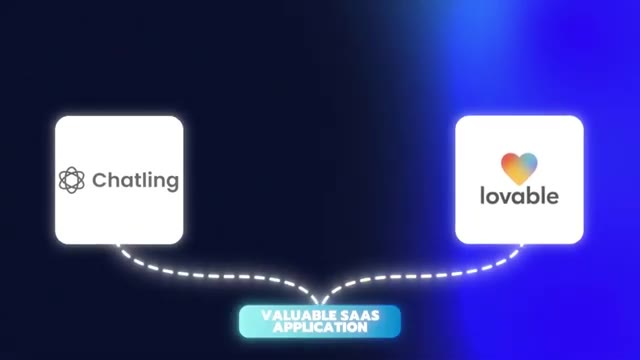
🔍 AgrandirTrès bien, sans plus attendre, plongeons dans le vif du sujet. Très bien, donc tout d'abord, nous devons nous rendre sur Chatling AI. Chatling vous permet en fait de créer des chatbots IA personnalisés pour votre entreprise grâce à cet outil de glisser-déposer ici. Assurez-vous donc de vous inscrire si ce n'est pas déjà fait. Je vais me connecter à mon compte ici. Et ensuite, après avoir créé ce chatbot IA, je vais en fait créer mon application complète en utilisant Lovable, sans aucune expérience en codage.
Interface & Outils : Navigateur web affichant le site officiel et le tableau de bord de l'application Chatling AI.
Contenu textuel & Code : Interface utilisateur de création de chatbots, boutons d'inscription et listes de projets de chatbots existants.
Action / Démonstration : Navigation sur le site web de Chatling AI et présentation du tableau de bord de gestion des chatbots.
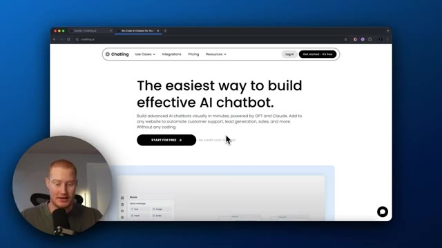
🔍 Agrandir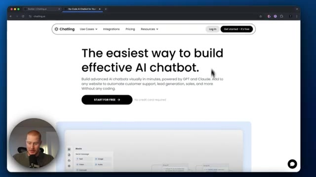
🔍 Agrandir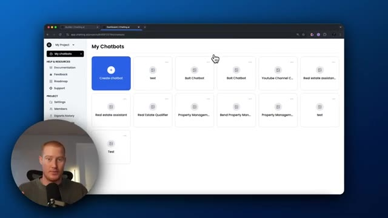
🔍 AgrandirIl suffit d'écrire ce que je veux créer, et cela va réellement me construire l'interface utilisateur de notre logiciel. Je vais également configurer un abonnement avec Stripe et en faire un SaaS IA entièrement déployable et lançable. Donc, tout d'abord, vous voudrez venir ici et créer un chatbot. Et partons de zéro ici, même s'il y a des modèles disponibles. Appelons cet agent Lovable.
Interface & Outils : Navigateur web affichant l'interface de gestion de chatbots Chatling.ai.
Contenu textuel & Code : Liste de projets de chatbots sous forme de cartes ("My Chatbots", "Bolt Chatbot", "Real estate assistant", etc.) et modale de saisie du nom.
Action / Démonstration : Le présentateur navigue dans le tableau de bord et initie la création d'un nouveau chatbot en cliquant sur l'interface.
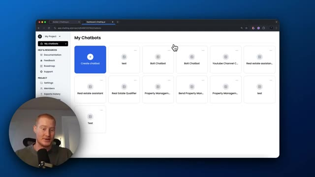
🔍 Agrandir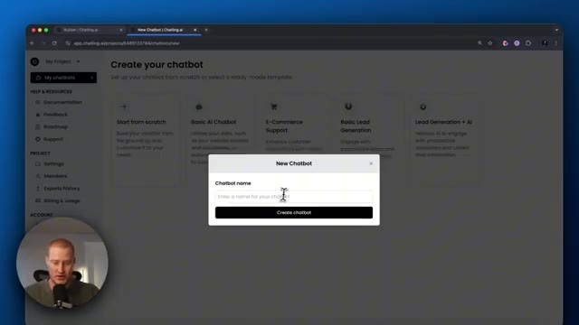
🔍 AgrandirEt ensuite, nous avons ce tableau de bord ici et nous voulons commencer dans le constructeur. C'est ici que nous allons réellement construire notre agent IA ou notre chatbot IA. Et si vous venez sur le côté gauche, vous pouvez voir qu'il y a différents blocs. Il y a des blocs de texte, des blocs d'images, des vidéos, il y a des blocs de capture de réponse, il y a des blocs IA, des étapes conditionnelles, des requêtes HTTP, toutes ces différentes choses.
Interface & Outils : Application web Chatting.ai (constructeur no-code d'agents et chatbots IA).
Contenu textuel & Code : Nœud "START", volet des composants "Blocks", catégories "Send message" (Text, Image, Video, Audio, Carousel) et "Capture response" (Buttons, Text, Number, Email, URL, Date/Time, Form), projet "Lovable Agent".
Action / Démonstration : Exploration du tableau de bord de création d'agent IA et ouverture du menu des blocs fonctionnels pour construire le scénario du chatbot.
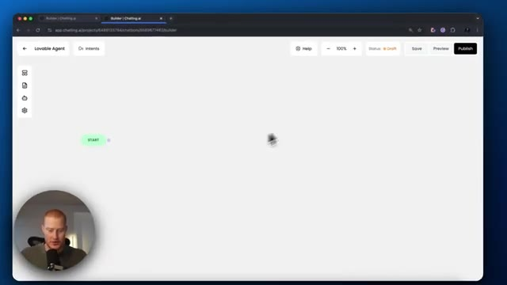
🔍 Agrandir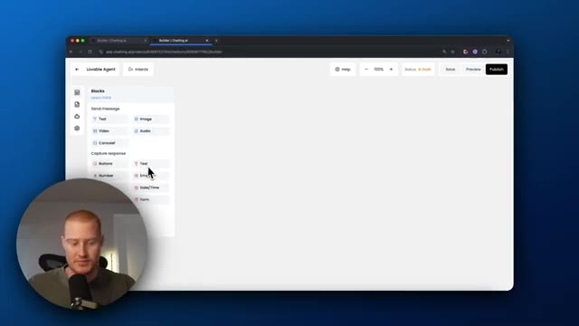
🔍 AgrandirCela peut sembler confus, mais restez avec moi dans cette vidéo pour que vous compreniez réellement comment faire cela. Donc, tout d'abord, ce que nous voulons faire, c'est glisser et déposer un bloc de texte ici. Et ce que ce bloc de texte va faire, c'est qu'il sera essentiellement déclenché lorsque vous interagissez réellement pour la première fois avec le bot. Et tout ce que nous avons à faire, c'est de venir ici et de taper ce que nous voulons, en fait, ce avec quoi nous voulons saluer notre utilisateur.
Interface & Outils : Interface web de construction de chatbot visuel (Chatling.ai).
Contenu textuel & Code : Espace de travail de workflow avec un nœud de départ et un panneau latéral de configuration de texte.
Action / Démonstration : Glisser-déposer d'un bloc de texte et configuration de son contenu textuel dans le constructeur de chatbot.
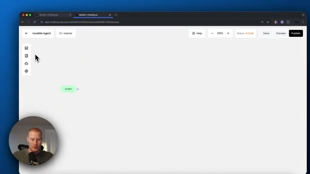
🔍 AgrandirDonc, à l'intérieur de ce bloc de texte, je vais dire : bonjour, je suis votre coach en affaires. D'abord, puis-je obtenir votre nom, s'il vous plaît ? Et ensuite, ce que nous ferons en dessous, c'est que nous allons réellement ajouter une réponse de capture. Et ensuite, appelons ceci nom du contact. Et ce que fait cette variable enregistrée, c'est qu'elle va enregistrer leur réponse ici, peu importe le texte qu'ils mettent. Et ensuite, nous pourrons l'utiliser plus tard dans notre conversation.
Interface & Outils : Interface web de construction de chatbot (Chatling.ai / Lovable Agent).
Contenu textuel & Code : Blocs de workflow conversationnel, panneau de configuration latéral pour l'envoi de texte et la capture de réponse avec des variables préexistantes. [DESC_IMAGE_3]
Action / Démonstration : L'utilisateur configure le bloc de capture de texte en assignant la variable correspondante au nom du contact.
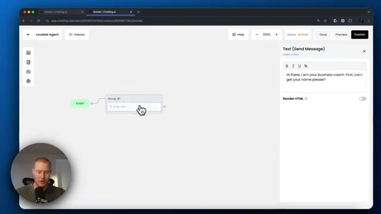
🔍 Agrandir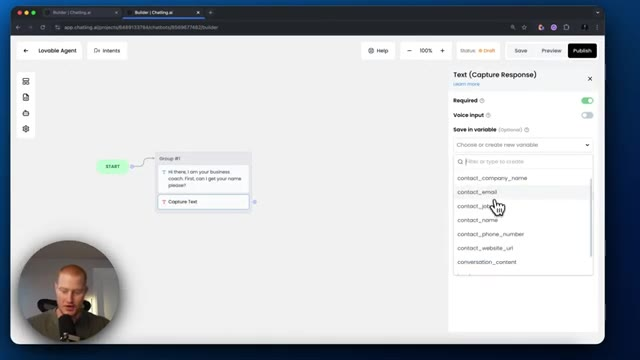
🔍 Agrandir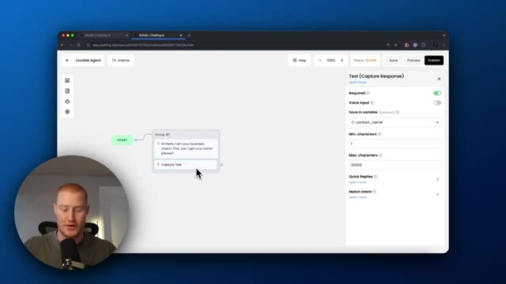
🔍 AgrandirEnsuite, ce que nous allons faire, c'est que nous allons réellement ouvrir un nouveau bloc ici. Et nous allons en faire juste un autre bloc de texte avant d'obtenir réellement la réponse dynamique de l'IA. Et ce que je vais taper ici, c'est : merci, nom du contact. À quels problèmes faites-vous face dans votre entreprise ? Et afin d'accéder réellement à nos variables ici, utilisez simplement une accolade ouvrante, puis référez-vous au nom du contact, qui est la variable précédente que je viens d'enregistrer.
Interface & Outils : Navigateur web affichant l'interface de création de chatbot Chatling (app.chatling.ai).
Contenu textuel & Code : Un diagramme de flux de chatbot comprenant un nœud de départ (START), un premier bloc (Group #1) contenant un message d'accueil textuel (« Hi there, I am your business coach... ») et une action de capture de texte, ainsi qu'un second bloc en cours de configuration nommé « Group #2 ».
Action / Démonstration : Le créateur ajoute et nomme un nouveau bloc de texte dans le flux conversationnel pour structurer les étapes du chatbot.
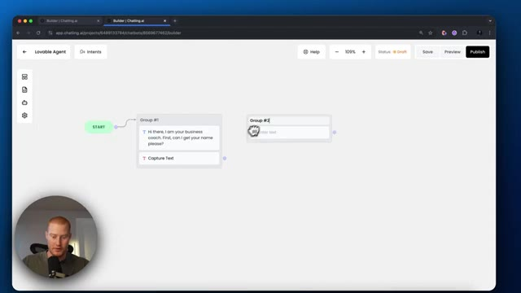
🔍 AgrandirEt ici, il les accueillera par leur nom qu'ils ont réellement saisi. C'est le but de ces variables personnalisées. Nous voulons ensuite ajouter un autre texte capturé ici, car nous voulons capturer les problèmes qu'ils rencontrent avec leur entreprise. Et ensuite, nous enverrons cette variable à l'étape de l'IA qui sera alors capable de traiter leur question. Très bien. Donc ce que je vais faire, c'est que je vais en fait sauvegarder cette réponse ici.
Interface & Outils : Éditeur de chatbot web de type "builder" (Chatling.ai) avec une interface visuelle par blocs connectés.
Contenu textuel & Code : Diagramme de flux conversationnel comprenant un bloc "START", un "Group #1" pour l'accueil et la capture du nom, et un "Group #2" utilisant la variable personnalisée `{contact_name}`.
Action / Démonstration : Configuration d'un flux conversationnel de chatbot en ajoutant et paramétrant des variables personnalisées et des blocs de capture de texte.
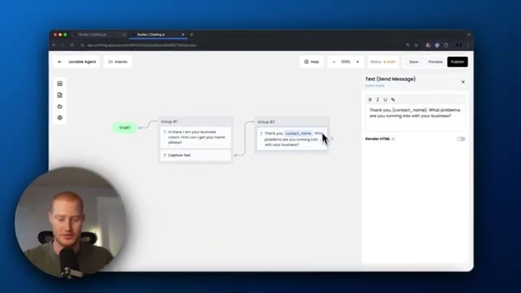
🔍 Agrandir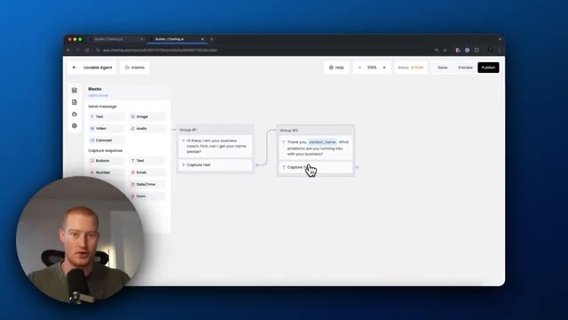
🔍 Agrandir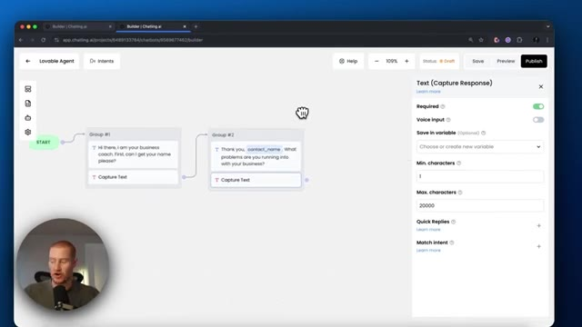
🔍 AgrandirJe vais juste nommer cette réponse. C'est donc le nom de la variable. Cela va ensuite l'enregistrer. Et à l'intérieur de notre étape de réponse de l'IA ici, au lieu d'accéder à la base de connaissances, nous voulons utiliser le modèle d'IA. Donc, cela va simplement utiliser un grand modèle de langage comme ChatGPT et toutes les connaissances qu'il possède afin de répondre à toutes les questions liées à l'entreprise. Si vous avez des informations spécifiques sur lesquelles vous voulez entraîner votre modèle d'IA et que vous voulez qu'il accède uniquement à ces informations, utilisez la base de connaissances ici et vous pouvez en fait aller télécharger des documents, des fichiers et des trucs afin de pouvoir réellement accéder à cette connaissance. Mais pour cela, je vais utiliser le modèle d'IA parce que
Interface & Outils : Interface web d'un constructeur de chatbot visuel par flux (type Chatling ou équivalent).
Contenu textuel & Code : Blocs de flux séquentiels (Group #1, Group #2, Group #3), options de configuration de l'étape 'AI Response', sélection de source de données et variables.
Action / Démonstration : Configuration des paramètres d'une étape de réponse par IA dans un parcours utilisateur automatisé.
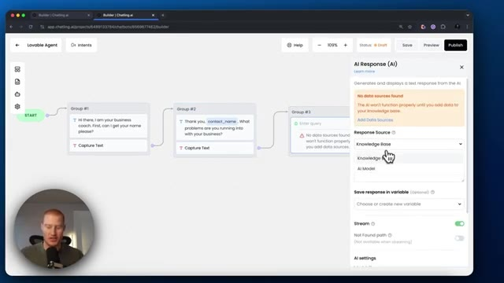
🔍 Agrandir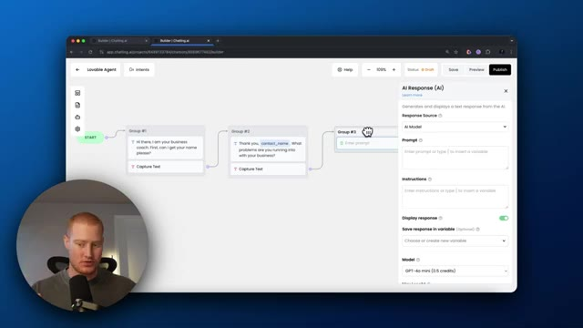
🔍 Agrandir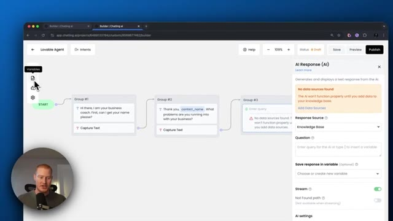
🔍 Agrandirce sera plus efficace. Et juste ici se trouve notre prompt. L'utilisateur a décrit son problème commercial comme suit. Utilisez la variable personnalisée de réponse que nous avons capturée juste ici. Et ensuite, vous êtes un expert en coaching d'entreprise qui fournit des conseils spécifiques et pratiques pour aider l'utilisateur à résoudre son problème. Si nécessaire, posez une question de suivi supplémentaire pour clarifier davantage leur problème. Et ensuite, dans les instructions ici, c'est ainsi que nous voulons que notre IA agisse. Je vais donc simplement écrire, gardez votre réponse aussi courte que possible. Essayez de penser à environ trois phrases maximum. De cette façon, notre utilisateur n'est pas spammé avec un paragraphe massif. Et ensuite, nous voulons réellement créer un autre
Interface & Outils : Chatling.ai (constructeur de chatbot visuel par blocs)
Contenu textuel & Code : Variables dynamiques ([response]), prompt de l'expert en coaching d'entreprise, instructions de formatage et sélection du modèle GPT-4o mini.
Action / Démonstration : Configuration du prompt et des instructions d'un nœud IA dans le flux conversationnel.
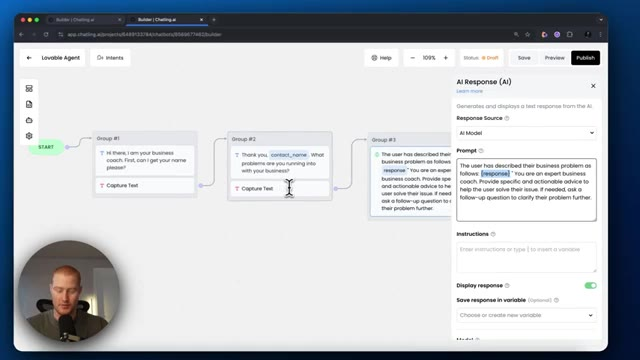
🔍 Agrandir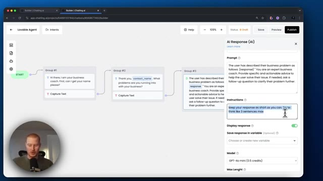
🔍 Agrandirvariable ici et je vais simplement appeler ça réponse_ia et comme ça nous pourrons l'utiliser dans une autre étape, vous pourriez choisir le modèle que vous voulez donc Claude 3.5 Sonnet, vous pourriez utiliser ChatGPT 4o mini pour moi, personnellement j'aime Claude 3.5 Sonnet donc je vais juste utiliser celui-ci et ensuite je vais aussi ajouter un bloc de texte ici qui demande fondamentalement je vais ajouter une question de suivi ici est-ce que ça aide un peu juste pour qu'on puisse avoir une idée si cela aide réellement l'utilisateur, ensuite ce que nous devons faire ajouter une capture de réponse ici, je pense que vous comprenez un peu ce qui se passe maintenant donc capturer la réponse et marquons simplement ceci comme une variable de réponse. Donc ensuite, nous devons ajouter
Interface & Outils : Interface web de construction de flux conversationnel (Chatling.ai / Lovable Agent).
Contenu textuel & Code : Blocs de messages séquentiels, variables dynamiques ("response", "contact_name"), et liste déroulante des modèles de langage (Claude, Gemini, GPT).
Action / Démonstration : Sélection d'un modèle d'IA dans le panneau latéral et modification du flux conversationnel par étapes.
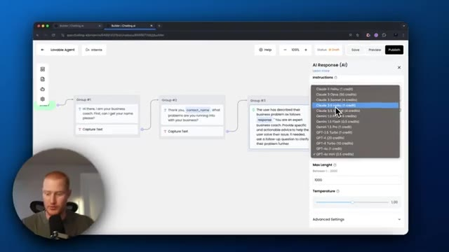
🔍 Agrandir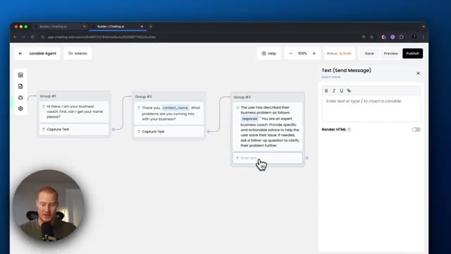
🔍 Agrandir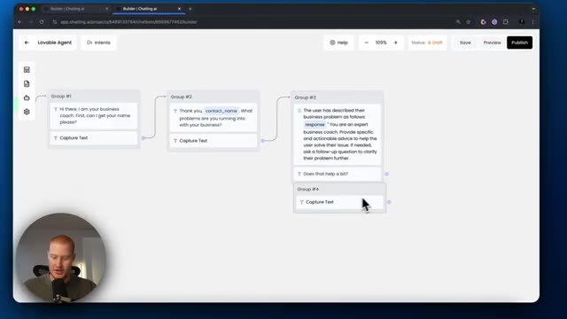
🔍 Agrandirune autre étape de réponse de l'IA ici. Nous allons en faire un bloc différent. Je vais donc connecter ce module ici, puis encore une fois, je vais changer ceci pour modèle d'IA et voici le message. L'utilisateur a posé la question suivante qui peut être ou non un suivi de votre réponse précédente. La question est ensuite cette variable de réponse. Donc, quelle que soit leur réponse ici même. Fournissez une réponse réfléchie et spécifique pour aider l'utilisateur, si nécessaire, incluez un exemple ou des conseils étape par étape.
Interface & Outils : Interface de création de chatbot (Chatling / Lovable Agent).
Contenu textuel & Code : Paramètres du bloc AI Response, source de données, source de réponse réglée sur 'AI Model', et champ de prompt contenant une question utilisateur.
Action / Démonstration : Configuration et personnalisation d'un bloc de réponse par IA dans le générateur de workflow.
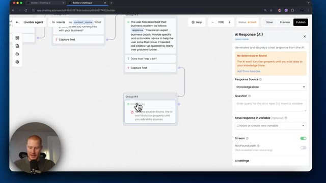
🔍 Agrandir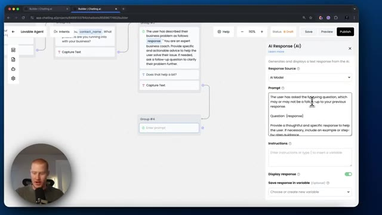
🔍 AgrandirRéponse précédente que vous avez donnée, la réponse. Nous allons donc également mapper cette variable de réponses de l'IA ici. De cette façon, nous pouvons fournir du contexte à notre agent IA. Même chose pour l'instruction comme dernière étape ici. Je vais garder la réponse aussi courte que possible. Essayez de penser à trois phrases maximum, environ. Et ensuite, nous allons également utiliser Claude 3.5 Sonnet à nouveau.
Interface & Outils : Application web de construction de chatbot/agent IA (Chatling.ai) affichée dans un navigateur, avec une vue de flux de nœuds (workflow builder).
Contenu textuel & Code : Configuration du nœud "AI Response" comprenant un champ Prompt structuré avec des variables ([response], [ai_answer]) et un champ Instructions pour limiter la longueur des réponses de l'IA.
Action / Démonstration : Saisie et configuration des instructions textuelles et des variables contextuelles dans le panneau de l'agent IA.
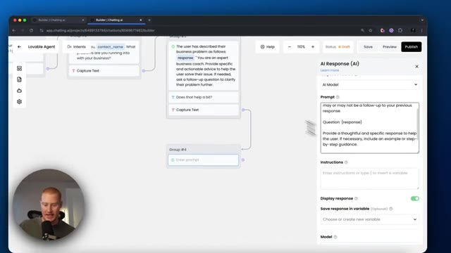
🔍 Agrandir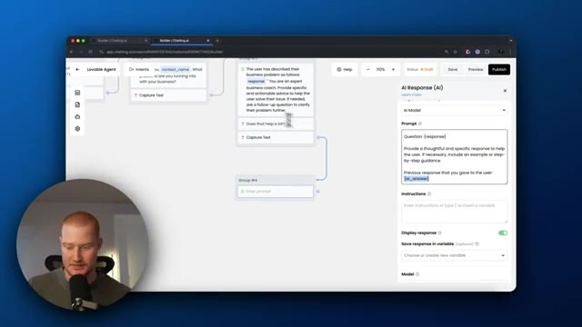
🔍 Agrandir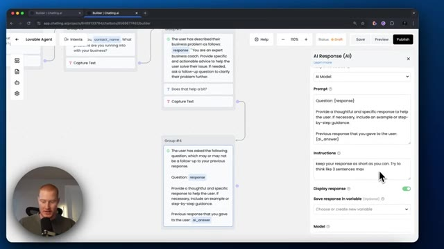
🔍 AgrandirEncore une chose. Nous allons également ajouter un autre bloc de texte ici et essentiellement dire, faites-moi savoir si vous avez d'autres questions. Comme ça, nous pourrons y répondre si nécessaire. Ensuite, ce que nous allons faire, c'est que nous allons suivre une étape conditionnelle. Suivez bien juste ici. Ensuite, nous devons en fait ajouter un nouveau bloc de texte de capture de texte, puis cliquer sur ce bloc de texte. Nous devons en fait ajouter une intention.
Interface & Outils : Navigateur web affichant l'interface de construction visuelle de chatbot (Chatling.ai).
Contenu textuel & Code : Blocs de flux conversationnel, invites de texte (Send Message), et paramètres de nœuds de chatbot.
Action / Démonstration : Ajout et configuration d'un nouveau bloc de texte et manipulation des nœuds conditionnels dans le flux du chatbot.
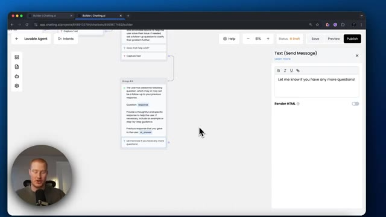
🔍 Agrandir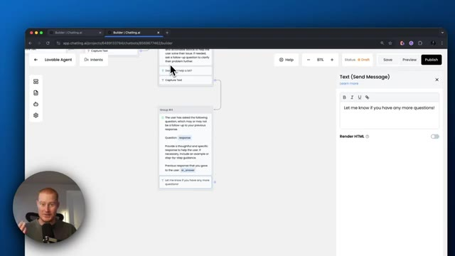
🔍 Agrandir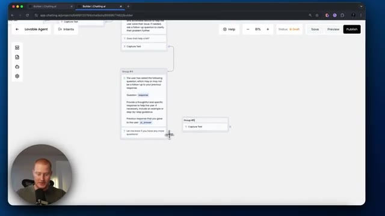
🔍 AgrandirDonc, descendons pour faire correspondre l'intention ici, et ensuite nous devons créer une nouvelle intention. Appelons-la simplement "j'ai d'autres questions". Donc s'ils ont d'autres questions, cela sera envoyé vers un flux de travail ou un parcours conversationnel différent. Donc ensuite, nous voulons cliquer sur l'intention "j'ai d'autres questions". Et ensuite, créons aussi une autre intention : "je n'ai plus de questions".
Interface & Outils : Interface de création de chatbot web (Chatling.ai).
Contenu textuel & Code : Formulaire de création d'intention avec les champs Nom et Description, et configuration des correspondances d'intentions dans le flux.
Action / Démonstration : Création et nommage d'une nouvelle intention conversationnelle nommée 'I have more questions'.
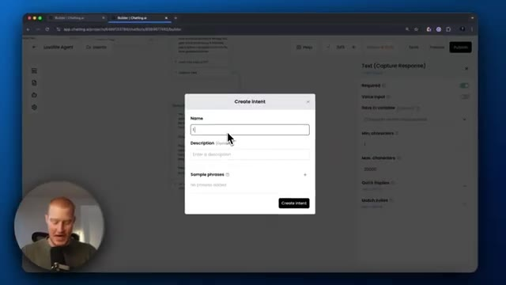
🔍 Agrandir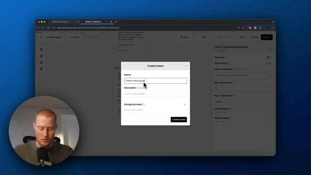
🔍 Agrandir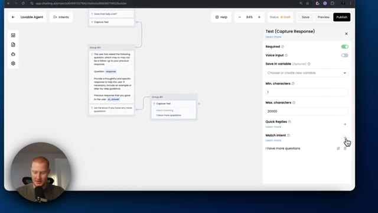
🔍 AgrandirEt ensuite, pour la phrase d'exemple, disons simplement ça. Voilà. Et puis encore une fois, nous devons réellement l'ajouter ici. Nous devons également nous assurer de l'enregistrer en tant que variable de réponse pour l'utiliser dans les étapes suivantes. Avant d'ajouter réellement notre étape suivante, nous devons ensuite connecter ces déclencheurs locaux ici. Connectons donc les deux, car nous devons envoyer notre utilisateur sur différents chemins conversationnels s'ils répondent à ces questions pour chacune de ces réponses qu'ils donnent.
Interface & Outils : Chatling.ai (éditeur visuel de chatbot IA sans code)
Contenu textuel & Code : - Configuration du bloc "Text (Capture Response)" : - Variable de sauvegarde : `response` - Limite de caractères : Min 1, Max 20000 - Réponses rapides / Correspondance d'intentions : "I have more questions", "I do not have any more questions" - Nœuds du workflow : "Group #4" (contenant les variables `{response}` et `{ai_answer}`) et "Group #6 (Capture Text)"
Action / Démonstration : Configuration d'une étape de capture de texte dans le flux du chatbot : association de la réponse de l'utilisateur à la variable `response` et paramétrage des options de suivi d'intention.
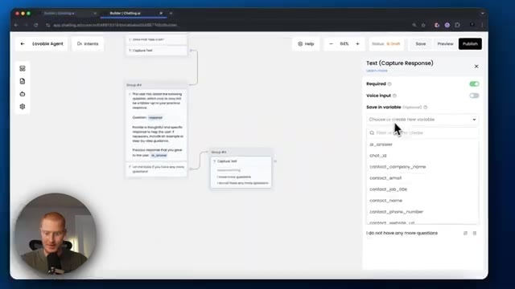
🔍 Agrandir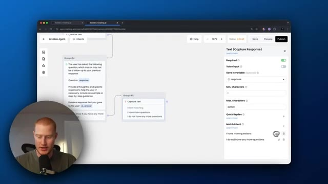
🔍 Agrandir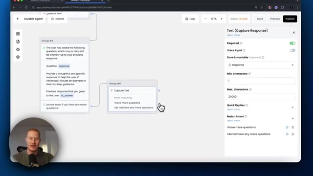
🔍 AgrandirDonc s'ils ont d'autres questions, nous allons les envoyer vers un flux de travail différent, et nous allons ajouter un bloc de texte ici. D'accord, donc s'ils ont d'autres questions, ils vont être envoyés directement ici. En gros, le texte sera : « Faites-moi savoir quelles questions vous avez. » Et ensuite, nous voulons capturer ce texte ici. Nous allons capturer ceci en tant que réponse.
Interface & Outils : Application web de construction de chatbots (Chatling.ai).
Contenu textuel & Code : Blocs logiques (Group #4, Capture Text, Send Message) et configurations de variables (réponses, questions).
Action / Démonstration : Manipulation des blocs de workflow et édition du texte de redirection pour les questions supplémentaires.
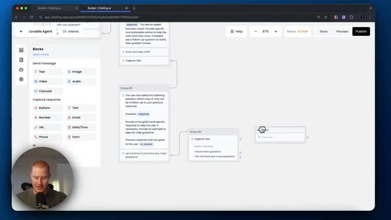
🔍 Agrandir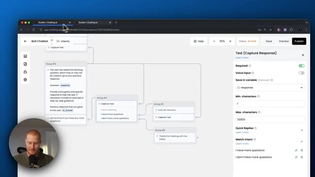
🔍 Agrandir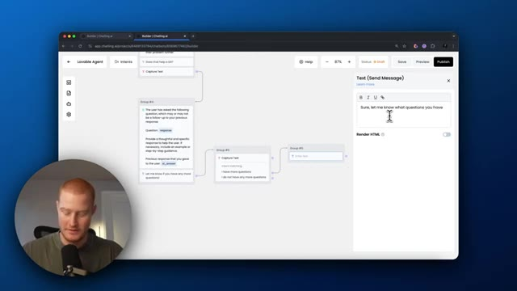
🔍 AgrandirEt ensuite, ce que nous allons faire, c'est que nous allons réinjecter cela ici, ce qui correspond fondamentalement à l'étape de l'intelligence artificielle qui indique que l'utilisateur a décrit son problème commercial comme suit. Et ensuite, nous sommes invités ici à répondre en tant que coach d'affaires. Donc s'ils ont d'autres questions, nous capturerons cette réponse pour la renvoyer ici, de sorte qu'ils continueront à interagir avec le robot conversationnel d'intelligence artificielle, essentiellement, c'est ce que cela signifie en explication simple. Et puis, s'ils n'ont plus de questions, tout ce que nous avons à faire est d'ajouter un autre bloc de texte ici et de dire simplement merci pour votre temps, merci pour la discussion, passez une excellente journée, et ensuite cela se chargera de mettre fin à la conversation.
Interface & Outils : Chatling (application de création de chatbots par IA)
Contenu textuel & Code : Blocs de flux conversationnel, variables de capture de réponse textuelle, paramètres de configuration des nœuds d'IA.
Action / Démonstration : Configuration des étapes du flux de discussion et sélection des blocs fonctionnels pour structurer l'interaction du chatbot.
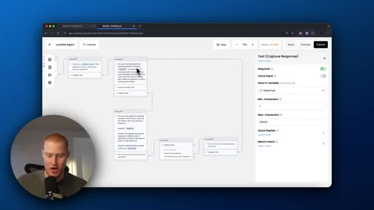
🔍 Agrandir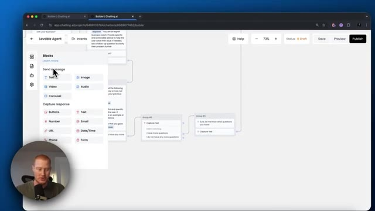
🔍 Agrandirla conversation, donc voilà, nous avons construit notre chatbot IA. Maintenant, ce que nous devons faire, c'est allons-y et testons cela. Tout ce qu'on a à faire, c'est de cliquer sur aperçu ici. Super. Alors bonjour. Je suis votre coach d'affaires. Tout d'abord, puis-je avoir votre prénom ? Merci, Brock. Vous pouvez donc voir qu'il utilise cette variable personnalisée. Quels problèmes rencontrez-vous dans votre entreprise ? En gros, je dis que j'ai des problèmes avec mon entonnoir et que j'ai besoin d'aide pour les corriger. Il va donc maintenant prendre cette réponse et l'envoyer ici à notre étape IA. D'accord. Donc, pour fournir les conseils les plus utiles concernant les problèmes d'entonnoir, j'aurai besoin d'informations plus spécifiques. Alors, à quelle étape de l'entonnoir rencontrez-vous le
Interface & Outils : Application web de création de chatbot (Chatling.ai / Lovable Agent).
Contenu textuel & Code : Blocs logiques d'IA connectés en flux et interface de test en temps réel (Preview).
Action / Démonstration : Test du chatbot IA en cliquant sur le bouton d'aperçu et en répondant aux questions de l'assistant.
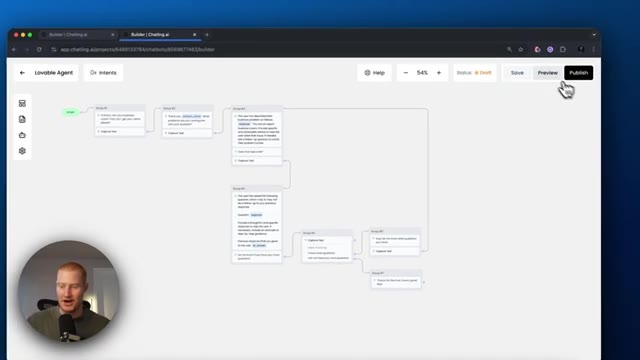
🔍 Agrandir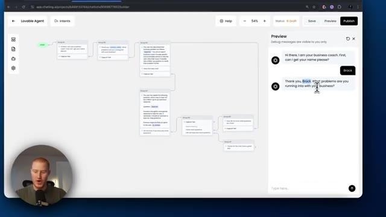
🔍 Agrandir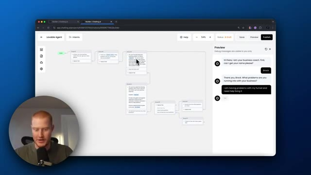
🔍 Agrandirla plus grande baisse ? Quels sont vos taux de conversion actuels entre les étapes ? Quels types d'entreprises ou de produits vendez-vous ? Disons simplement que, donc bien sûr, j'obtiens mes prospects grâce à YouTube. D'accord. Donc je viens de saisir un peu plus d'informations sur mon entreprise. Donc, espérons que notre coach IA pourra nous aider sur la base de ces informations. Donc ça me dit en fait comment je pourrais améliorer mes taux de conversion. Donc stratégie de contenu, optimisation, amélioration du lead magnet, améliorations du tunnel de vente. Donc si vous ne connaissez rien au marketing sur Internet, cela vous dépasse peut-être, mais tout ce que vous devez savoir, c'est que cela fournit en fait des informations plutôt sympas. Faites-moi savoir si vous
Interface & Outils : Application web Chatling (constructeur de chatbot par IA, interface de type workflow).
Contenu textuel & Code : Diagramme de blocs logiques et conversationnels reliés par des flèches, interface de prévisualisation affichant des questions de diagnostic commercial et des réponses de l'IA.
Action / Démonstration : Saisie de données dans le chatbot de test et affichage des recommandations stratégiques générées par l'IA.
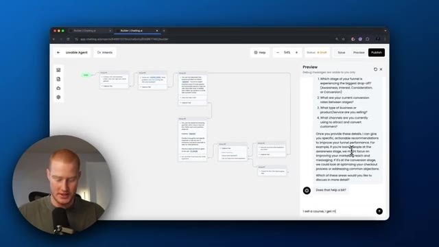
🔍 Agrandir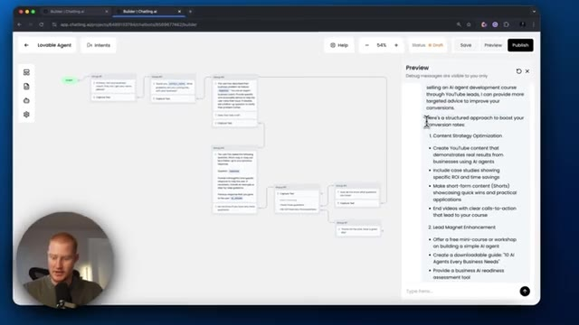
🔍 AgrandirVous avez d'autres questions ? Oui, c'est le cas. Quels autres canaux devrais-je utiliser à part YouTube ? Donc vous pouvez voir que ça a vraiment correspondu à l'intention. Il a donc pu comprendre que vous aviez d'autres questions. Donc quels autres canaux devrais-je utiliser à part YouTube ? Et voilà. Donc maintenant, il nous donne en fait un peu plus de différents types de plateformes qu'on pourrait utiliser. Je vais juste répondre ici et dire, oui, c'est le cas.
Interface & Outils : Application web de construction de chatbot (Lovable Agent / Chatting.ai)
Contenu textuel & Code : Diagramme de flux conversationnel, nœuds conditionnels, et messages de test dans le panneau de prévisualisation interactif.
Action / Démonstration : Test en direct du chatbot et validation de la reconnaissance d'intention concernant les questions sur les canaux marketing.
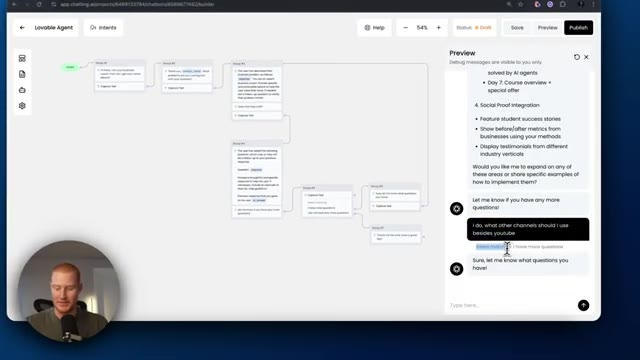
🔍 Agrandir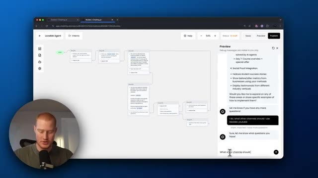
🔍 AgrandirParce que ça aide un peu. Et voilà. Donc maintenant que notre boîte de discussion IA est configurée, il nous suffit de cliquer sur publier. Et maintenant, allons-y pour la partie la plus amusante et commençons réellement à construire notre application en utilisant Lovable. D'accord, donc si vous ne savez pas ce qu'est Lovable, Lovable est une plateforme de programmation par IA qui vous permet réellement de taper ce que vous essayez de construire et elle le construira avec du langage naturel. Donc pensez simplement à taper dans cette boîte ici et elle vous aidera à construire un logiciel et même à construire le backend de notre application. Donc je vais parcourir ce processus dans cette vidéo ainsi que d'expliquer comment configurer Stripe, ce qui est assez facile à faire avec cette plateforme également, pour que vous puissiez ensuite commencer à facturer pour votre logiciel même si
Interface & Outils : Navigateur web affichant l'outil de création de chatbot Chatling et la plateforme de développement d'applications Lovable.
Contenu textuel & Code : Organigramme de logique conversationnelle, aperçu de chat en direct, et interface de génération d'applications pilotée par l'IA.
Action / Démonstration : Publication d'un agent de discussion configuré puis navigation vers la plateforme de développement Lovable.
Tu n'es pas une personne technique comme moi. Tout d'abord, ce que je vais faire, c'est que je vais lui demander de créer. D'accord, alors voici mon instruction. Je lui demande fondamentalement d'agir en tant que coach en affaires. Je vais ajouter un chatbot IA à cette application qui agira comme un coach en affaires. Le but de cette application est de pouvoir enregistrer des notes de la session de conseil. Pensez donc à ceci comme à un endroit où ajouter notre chatbot IA, mais nous voulons pouvoir stocker toutes les informations que nous abordons lors de ce genre de session de conseil avec notre coach IA. Commençons donc par ceci et il commencera réellement à coder cela pour nous, vous pouvez voir sur le côté gauche que c'est là que nous faisons réellement des changements.
Interface & Outils : Navigateur web affichant la plateforme de développement d'applications Lovable.dev.
Contenu textuel & Code : Texte de prompt de création d'application : "Build me an app that acts as a business coach..." avec des instructions pour ajouter un chatbot IA et une interface avec dégradé.
Action / Démonstration : Saisie et soumission d'un prompt textuel pour générer automatiquement une application complète sans compétences techniques.
et interagir avec notre application. Et le côté droit va réellement nous montrer un aperçu ainsi que nous écrire du code. D'accord. Donc vous pouvez voir le code en train d'être écrit juste ici. Donnez à ceci juste un petit peu de temps et nous devrions avoir un aperçu chargé. D'accord. Donc voici initialement ce qu'il nous construit. C'est une interface utilisateur assez simple. Elle n'a pas l'air géniale, mais nous pouvons y apporter des modifications. Alors essayons juste ceci. Disons simplement session de conseil numéro un, discuter de la manière d'optimiser mon entonnoir de vente bla bla bla, nous pourrions l'enregistrer et ensuite nous pourrions ajouter une autre note, toutes ces choses ici, allons-y simplement et ce que je vais faire, je vais en fait aller chercher une capture d'écran de
Interface & Outils : Navigateur web affichant la plateforme de développement et de prototypage Lovable.dev.
Contenu textuel & Code : Code source JSON/Tailwind pour les styles de l'application et interface utilisateur d'une application de prise de notes pour coachs professionnels. [DESC_IMAGE_2] Navigation et démonstration interactive de l'application web générée par IA.
Action / Démonstration : Explications face caméra et analyse conceptuelle des marchés.
Un autre logiciel que j'aime et que je donne à celui-ci afin de construire une interface utilisateur sans avoir à réfléchir exactement à la manière dont je veux construire ceci, donc j'aime aller sur dribble.com et trouver des idées de différents logiciels, alors ajoutons simplement une application de prise de notes, donc j'aime l'apparence de celle-ci, évidemment nous n'allons pas utiliser exactement la même fonctionnalité que cette application, mais je vais juste copier. Je vais faire une capture d'écran de ceci, et la donner à Lovable ici.
Interface & Outils : Navigateur web affichant Lovable.dev et Dribbble.com
Contenu textuel & Code : Maquettes d'interfaces utilisateur, barres de recherche, listes de notes et options de design.
Action / Démonstration : Navigation sur le web pour trouver des idées d'interface utilisateur et visualisation d'un prototype d'application.
Et ensuite, en gros, disons : créons quelque chose avec un thème similaire. Avançons avec ça et laissons ceci écrire le code. Cool. Donc ça, évidemment, ne ressemble pas exactement à la même chose parce qu'on n'a pas besoin d'utiliser toutes ces fonctionnalités différentes ici, mais ça nous a donné une mise en page différente ici. Alors essayons ça. J'aime bien les petits aspects de dégradé ici. C'est bien mieux qu'avant. Alors disons simplement : session de conseil. Super. Ça a l'air cool.
Interface & Outils : Navigateur web affichant la plateforme de développement d'applications Lovable.dev et le site Dribbble.
Contenu textuel & Code : Interface utilisateur générée par IA, instructions textuelles de prompt, design d'application de notes avec code modifiable via Supabase.
Action / Démonstration : Saisie d'un prompt pour s'inspirer d'une capture d'écran et modification automatique de l'interface et du code de l'application.
mettons maintenant essentiellement disons ajoutons la possibilité d'ajouter des étiquettes afin de catégoriser les notes d'accord donc j'ai fait quelques modifications ici nous pouvons maintenant ajouter une étiquette donc appelons ceci contenu donc si jamais nous avons une session de contenu avec notre coach IA coach d'affaires IA nous pourrions alors étiqueter ceci comme contenu et retourner dans nos notes alors commençons à taper disons simplement j'ai décidé que je dois commencer à faire trois shorts YouTube par semaine nous pouvons ensuite enregistrer nos notes créer une nouvelle note c'est cool nous pouvons filtrer ici. Super. Ça a l'air cool. C'est très basique. Nous pouvons aller beaucoup plus en détail avec ça, mais je vais commencer avec ça pour l'instant. Ce que nous devons faire maintenant les prochaines étapes c'est nous devons
Interface & Outils : Lovable (plateforme de développement web par IA) et l'interface de prévisualisation de l'application de notes.
Contenu textuel & Code : Application web 'Business Coach Notes' avec des sections 'My Notes' et 'Content session', incluant la fonctionnalité d'ajout de tags et de notes textuelles.
Action / Démonstration : Le créateur teste et démontre l'ajout d'une étiquette pour catégoriser une note de session de coaching.
pour ajouter réellement la possibilité aux utilisateurs de se connecter et d'authentifier leurs comptes. Nous pourrions donc faire cela en utilisant Lovable dans l'intégration Supabase. Donc essentiellement, pour avoir accès à cette application, vous allez devoir réellement vous connecter et créer votre compte. Faisons donc cela maintenant. Cliquons sur cette intégration Supabase ici. Lovable rend cela extrêmement facile à utiliser. Allons-y donc et créons un nouveau projet.
Interface & Outils : Navigateur web affichant la plateforme Lovable et l'application en cours de développement (Business Coach Notes).
Contenu textuel & Code : Panneau de chat IA de Lovable, interface utilisateur d'une application de notes et options d'intégration Supabase (« Connect to add authentication, store data... »).
Action / Démonstration : Le présentateur survole l'icône et le menu Supabase pour illustrer l'intégration de l'authentification et de la base de données.
Nous allons nommer ce coach d'affaires et créer un nouveau projet. Juste ici, il est indiqué qu'il configure de nouveaux projets. Donnez donc à cela quelques minutes et ça devrait être prêt. Pendant que cela charge, je suis en train d'apporter quelques modifications. Je demande donc à Lovable d'ajouter la possibilité d'avoir des dossiers qui sont catégorisés par les étiquettes sur les notes. Donc si c'est sous aide à la création de contenu, ce sera ensuite ajouté à une sorte de dossier ici afin de catégoriser un peu mieux ces notes pour rester un peu plus organisé.
Interface & Outils : Supabase, interface Lovable (application web de notes de coaching).
Contenu textuel & Code : Configuration de base de données Supabase, clés API du projet, interface de chat Lovable avec historique des modifications et aperçu d'application "Business Coach Notes".
Action / Démonstration : Configuration d'un nouveau projet et ajout de modifications de code via Lovable.
D'accord, super. C'est génial maintenant. Donc vous pouvez voir que nous avons maintenant différents dossiers à l'intérieur de nos notes pour en quelque sorte catégoriser tout ça un peu mieux. Testons cela une fois ici. Donc appelons juste ça. Ouais, donc ça a l'air super là. Maintenant, retournons sur Supabase et assurons-nous que c'est bien connecté. Tout ce qu'on a à faire, c'est venir dans notre compte.
Interface & Outils : Interface web de l'application de prise de notes "Business Coach Notes" développée avec Lovable.
Contenu textuel & Code : Dossiers de notes ("content", "business") et section d'édition de notes avec tags.
Action / Démonstration : Test et démonstration de l'ouverture d'un dossier et de la visualisation des notes associées.
Nous allons venir sur coach d'entreprise. Nous allons connecter cela. Et cela va maintenant faire de la magie côté back-end ici dans Lovable. Donc, si vous ne savez pas ce qu'est Supabase, Supabase est essentiellement la façon dont nous stockons les informations des utilisateurs et ajoutons un back-end à notre application. Cela pourrait donc être assez complexe si vous ne savez pas ce que c'est, mais Lovable rend cela extrêmement facile à utiliser.
Interface & Outils : Présentation ou face-caméra explicatif du trader sans interface logicielle partagée.
Contenu textuel & Code : Explications orales des stratégies et mise en contexte méthodologique du marché.
Action / Démonstration : Explications face caméra et analyse conceptuelle des marchés.
Vous pouvez simplement saisir ce que vous voulez et cela va vraiment construire ces choses dans le backend pour nous, ce qui est absolument hallucinant vu que je ne sais pas coder et que je peux réellement créer ces différentes choses. En gros, ce que vous voulez faire, c'est un peu suivre ce que Lovable dit ici. Vous pouvez donc voir que nous avons maintenant des comptes utilisateurs et la connexion. Nous pouvons stocker et utiliser de vraies données. Nous pourrions ajouter des fonctionnalités avancées avec des edge functions, ce que nous allons faire.
Interface & Outils : Supabase et Lovable (plateformes de développement no-code / backend).
Contenu textuel & Code : Éditeur de table Supabase et interface de prévisualisation Lovable avec des fonctionnalités de gestion de notes et d'authentification.
Action / Démonstration : Connexion du backend Supabase et affichage de l'interface utilisateur générée automatiquement par l'IA.
Et ça dit en gros que si nous prévoyons de faire se connecter les utilisateurs, nous recommandons vivement de configurer d'abord l'authentification. Donc disons « configurons l'authentification » et maintenant nous allons faire ce qui doit être fait afin de faire cela. Ça demande quelles informations nous voulons stocker. Disons « stockons le nom d'utilisateur » et stockons le nom d'utilisateur et toutes les notes et tous les dossiers qu'ils enregistrent sur leurs comptes.
Interface & Outils : Interface web de développement (Lovable.dev / Supabase) avec affichage du code/prévisualisation et incrustation vidéo du présentateur.
Contenu textuel & Code : Documentation de connexion Supabase, fonctionnalités utilisateur (User Accounts and Login, Store and Use Real Data), et instructions sur la configuration de l'authentification.
Action / Démonstration : Le présentateur commente l'intégration de Supabase et l'importance de configurer l'authentification en premier pour les utilisateurs.
Il est en train d'écrire du code qu'il va utiliser à l'intérieur de Supabase afin de configurer toutes ces informations. Encore une fois, c'est assez technique de faire ce genre de choses soi-même. Et le fait que Lovable puisse faire cela est assez époustouflant. C'est génial. Nous pouvons donc appliquer ces changements. Ensuite, nous allons exécuter ce code SQL à l'intérieur de Supabase. Si nous venons dans l'éditeur de tables, vous pouvez maintenant voir deux tables différentes configurées qui ont en fait été créées par notre agent ici. Il y a donc une table de notes et ensuite des profils. Nous pourrions donc stocker les notes ici ainsi que les différents profils que nous avons configurés. D'accord. Donc maintenant nous avons cette connexion
Interface & Outils : Lovable.dev (AI web app builder) et Supabase Dashboard (Table Editor / SQL Database)
Contenu textuel & Code : Code SQL DDL (`CREATE TABLE profiles`, `CREATE TABLE notes`), règles de sécurité RLS (`ENABLE ROW LEVEL SECURITY`), triggers PL/pgSQL (`handle_new_user`), statut de migration SQL et schéma de base de données PostgreSQL.
Action / Démonstration : Génération et exécution automatique des scripts de migration SQL par l'assistant IA de Lovable pour configurer la base de données Supabase liée à l'application.
juste ici sur notre compte. Nous pouvons nous connecter et nous inscrire. Tout d'abord, ce que nous voulons faire, nous voulons venir ici et nous devons désactiver quelque chose à l'intérieur de notre Supabase. Donc, venez sur le côté gauche là où il est écrit authentification, venez sur e-mail, et nous voulons désactiver l'e-mail confirmé. De cette façon, lorsqu'un utilisateur s'inscrit, il n'a pas réellement besoin d'aller sur son e-mail et de vérifier toutes les informations. Donc ce que nous pouvons faire, c'est que nous pouvons simplement nous inscrire en utilisant notre e-mail. Boum, voilà.
Interface & Outils : Navigateur web affichant l'interface de Supabase.
Contenu textuel & Code : Section "Authentication" avec les options "Users", "Policies", "Providers", "Rate Limits", "Email Templates", "URL Configuration" et "Hooks".
Action / Démonstration : Navigation dans le panneau latéral gauche pour configurer les paramètres d'authentification.
Nous avons maintenant accès à notre application de coaching d'affaires. Et ensuite, si nous actualisons notre Superbase, vous pouvez voir qu'un nouveau compte a été créé avec l'identifiant de cet utilisateur. Donc maintenant, vous savez, nous pourrions nous connecter et avoir accès à notre application, et ajoutons une note ici et assurons-nous que cela fonctionne également. Appelons donc ceci test. Appelons ceci test, puis test, très créatif ici, mais nous voulons juste nous assurer que notre application enregistre ces informations. J'ai donc créé ce dossier. Si nous venons sur Supabase, venons dans nos notes, et voilà. Notre nouvelle note a ensuite été enregistrée pour notre utilisateur qui était
Interface & Outils : Supabase Table Editor et Lovable platform.
Contenu textuel & Code : Identifiant utilisateur et données de la base de données Supabase, interface utilisateur de prise de notes pour le coaching.
Action / Démonstration : Navigation et vérification de la création d'un nouveau compte utilisateur dans la base de données Supabase.
capables de se connecter et d'avoir accès à leur compte. C'est génial. Nous avons configuré cela. Maintenant, la dernière étape que nous devons ajouter est d'ajouter la possibilité de percevoir des paiements de la part des utilisateurs et de leur permettre d'accéder à un compte seulement s'ils nous payent réellement avec Stripe, parce que nous voulons gagner de l'argent d'une manière ou d'une autre. Alors allons-y et faisons cela. Je tiens à mentionner que toutes ces étapes fonctionnent exactement de la même manière.
Interface & Outils : Navigateur web, Lovable.dev, Supabase.
Contenu textuel & Code : Interface utilisateur de l'application de notes avec un panneau de chat textuel affichant l'historique des modifications de code, de migration SQL et d'authentification.
Action / Démonstration : Le créateur montre l'état actuel de l'application après la mise en œuvre de l'authentification et de la gestion des sessions.
Donc, si vous développez votre propre application, suivez simplement la façon d'utiliser Supabase et de configurer Stripe. Peu importe si vous créez une application de notes pour coach d'entreprise, vous pourriez construire quelque chose d'un peu plus complexe, tout ce que vous voulez faire. Mais ici, je veux vous montrer un exemple rapide, en utilisant notamment un chatbot IA. Je pense que c'est un très bel ajout à une application comme celle-ci. Très bien, ensuite, disons simplement : « aide-moi à configurer Stripe ». Donc, après lui avoir demandé de configurer Stripe pour moi, il nous donne ensuite une liste de contrôle afin de s'assurer que nous pouvons le faire.
Interface & Outils : Navigateur web, plateforme de développement Lovable, interface utilisateur de prévisualisation d'application.
Contenu textuel & Code : Code source généré, instructions textuelles de l'assistant IA, interface de l'application "Business Coach Notes" avec gestion des notes et authentification Supabase. [DESC_IMAGE_2] Navigation et démonstration visuelle de la création d'une application de notes pour coach d'entreprise.
Action / Démonstration : Explications face caméra et analyse conceptuelle des marchés.
Donc le projet Supabase est configuré. On l'a fait. L'authentification est implémentée. On l'a fait. Maintenant, nous devons ajouter un compte Stripe et la configuration du produit. Nous devons configurer nos clés API Stripe. Et ensuite, nous avons besoin de fonctions Edge pour gérer les paiements, ce qui se fait à l'intérieur de Supabase. Et nous allons demander à Lovable de faire ça pour nous. Donc, premièrement, nous devons créer votre produit Stripe et avoir l'ID du prix. Donc ce que nous allons faire, c'est aller sur Stripe, assurez-vous d'être en mode test ici.
Interface & Outils : Plateforme de développement Lovable.dev, application "Business Coach Notes" en prévisualisation web.
Contenu textuel & Code : Liste de contrôle des prérequis d'intégration Stripe : - [x] Supabase project is set up - [x] Authentication is implemented - [ ] Stripe account and product setup - [ ] Stripe API keys configured - [ ] Edge function for handling payments
Action / Démonstration : Revue détaillée par le présentateur de la feuille de route générée par l'IA dans Lovable pour configurer les paiements Stripe via Supabase.
Cela rendra les choses un peu plus faciles. Ensuite, nous allons vouloir créer un paiement. Créons donc simplement un lien de paiement. Appelons cela application de coaching d'entreprise. Et nous devons, ensuite nous allons appeler cela récurrent. De cette façon, ils sont facturés tous les mois. Et ce sera 15 dollars ici. Ajoutons ce produit. Vous pouvez évidemment faire en sorte que votre abonnement soit ce que vous voulez, un paiement unique ou un paiement récurrent comme celui-ci.
Interface & Outils : Tableau de bord Stripe (dashboard.stripe.com)
Contenu textuel & Code : Configuration d'un produit récurrent (abonnement) nommé « Business coach app » au prix de 15,00 USD par mois.
Action / Démonstration : Création et paramétrage d'un lien de paiement récurrent pour une application de coaching d'entreprise sur Stripe.
Ensuite, nous allons descendre et cliquer sur ceci ici. Cliquez sur le prix. Et ici, en haut dans le coin supérieur droit, nous voulons ensuite aller sur notre compte Lovable, puis fournir ces informations ici. Donc, voici mon ID de produit. Super. Maintenant que j'ai effectivement ajouté notre ID de prix Stripe, nous devons ensuite ajouter nos clés API.
Interface & Outils : Navigateur web affichant Stripe Dashboard et la plateforme de développement Lovable.dev.
Contenu textuel & Code : Configuration des abonnements Stripe, ID de prix (price_...), et interface de génération d'applications avec assistant IA. [DESC_ACTION_1] Navigation sur Stripe pour récupérer l'ID du produit tarifaire. [DESC_ACTION_2] Affichage des instructions de l'assistant Lovable pour la configuration de Stripe. [DESC_ACTION_3] Saisie et envoi de l'ID produit Stripe dans le chat de Lovable.
Action / Démonstration : Explications face caméra et analyse conceptuelle des marchés.
C'est essentiellement la possibilité pour nous d'utiliser Stripe. Si vous ne savez pas ce que c'est, si vous n'êtes pas une personne technique, vous allez vouloir descendre jusqu'aux développeurs, descendre jusqu'aux clés API, et nous voulons en fait révéler notre clé ici même et ne montrer ces informations à personne. D'accord. Une fois que vous avez fait cela, revenez sur Lovable. Et une chose que je tiens à mentionner, c'est de ne jamais, au grand jamais, publier vos clés secrètes Stripe ou l'une de vos clés API dans ce chat ici, car les gens peuvent voir ces informations.
Interface & Outils : Stripe Dashboard, Lovable.dev
Contenu textuel & Code : Tableau de bord développeur Stripe, liste des clés API, interface de configuration de la clé STRIPE_SECRET_KEY.
Action / Démonstration : Navigation vers l'onglet des clés API dans Stripe et intégration de la clé secrète dans l'application.
Vous devez ensuite le coller dans cette case ici. Donc s'il est écrit « entrez les clés API », vous pouvez l'ajouter en toute sécurité juste ici, mais pas dans ce chat. Alors collons ceci. Sauvegardons-le. Et cela va maintenant enregistrer ces informations dans notre compte Supabase. Je dis juste que j'ai ajouté la clé API. Que dois-je faire maintenant ? D'accord. Donc maintenant, on nous invite à utiliser ce bouton « s'abonner maintenant ».
Interface & Outils : Interface de développement web Lovable.dev, assistant conversationnel intégré et aperçu d'application web.
Contenu textuel & Code : Champ de saisie pour la clé secrète Stripe (STRIPE_SECRET_KEY) masquée par des astérisques, boutons "Cancel" et "Save", et message de confirmation de sauvegarde des clés API.
Action / Démonstration : Saisie et sauvegarde de la clé secrète API Stripe dans l'interface de configuration de l'application.
Et allons-y pour tester cela. Pour que Stripe fonctionne, ça ne va pas fonctionner dans l'aperçu ici. Nous devons donc réellement déployer ceci sur une URL et y accéder dans notre navigateur pour nous assurer que nous pouvons réellement tester cela. Ça ne fonctionnera pas autrement. Maintenant que ceci est effectivement déployé sur une URL, allons-y pour tester cela. Alors tout d'abord, inscrivons-nous et maintenant nous pouvons nous abonner.
Interface & Outils : Lovable (générateur d'applications web par IA), navigateur web Google Chrome.
Contenu textuel & Code : Clé d'API Stripe (`STRIPE_SECRET_KEY`), fonctions Edge de paiement et de vérification d'abonnement, interface de l'application "Business Coach Notes", URL de déploiement `coachify-animate.lovable.app`.
Action / Démonstration : Déploiement de l'application web depuis Lovable vers une URL externe publique afin de pouvoir tester le fonctionnement réel du système de paiement Stripe en dehors du mode aperçu.
Cela devrait maintenant nous amener sur une page de paiement Stripe et ce que nous pourrions faire. D'accord. Nous pourrions donc simplement coller de fausses informations de carte ici. Et comme nous sommes en mode test, il s'agit d'une fausse transaction. Donc cette transaction ne sera pas réellement validée, mais cela permettra simplement de s'assurer que tout fonctionne correctement. Traiter ceci. Voilà. On dirait que c'est passé et nous avons maintenant accès à notre application où nous pouvons ensuite ajouter des notes, enregistrer des notes.
Interface & Outils : Navigateur web affichant la documentation Stripe, une page de paiement Stripe Checkout et une application web de notes.
Contenu textuel & Code : Numéros de cartes bancaires fictifs pour les tests Stripe (Visa, Mastercard, etc.), formulaire de paiement Stripe avec champs pour le numéro de carte, la date, le CVC, le nom et l'adresse.
Action / Démonstration : Navigation sur la documentation des cartes de test Stripe puis saisie des informations de paiement fictives sur la page de paiement.
Et voilà. Donc ça fonctionne maintenant. Ensuite, nous pourrions revenir sur notre compte Stripe. Et ensuite, vérifions simplement les transactions. Vous pouvez voir qu'un paiement de 15 dollars est bien passé. Il reste 14,26 dollars après les frais. Donc cela fonctionne maintenant. Nous avons une application SaaS entièrement conçue avec laquelle nous pouvons réellement gagner de l'argent et nous pouvons modifier cela comme nous le voulons. C'ès une interface utilisateur très basique de cette application. Très bien. Donc la prochaine chose que nous devons faire est en fait d'ajouter notre agent IA que nous avons construit dans ChatLink à notre site web afin de jouer réellement le rôle de coach d'affaires. Revenons donc à notre compte. Allons-y
Interface & Outils : Navigateur web affichant le tableau de bord Stripe et une application web de prise de notes.
Contenu textuel & Code : Solde USD de 14,26 $ affiché sur le tableau de bord de test de Stripe.
Action / Démonstration : Consultation du tableau de bord Stripe pour vérifier le paiement réussi.
jusqu'au widget de site web, cliquez sur le chat flottant, et nous voulons copier ce code ici. Ensuite, nous pourrions avoir un chatbot dans le coin inférieur droit de notre application. Et puis, tout ce que vous avez à faire, c'est fondamentalement de demander à notre charmant assistant ici de dire d'intégrer ce code dans notre application. Autorisez uniquement les utilisateurs qui ont un compte payant à y accéder. Ainsi, la seule façon d'avoir accès à ce chatbot est de payer pour rejoindre notre plateforme.
Interface & Outils : Navigateur web, interface de Chatling, plateforme de développement Lovable.
Contenu textuel & Code : Code d'intégration JavaScript pour un widget de chatbot et code SQL pour la gestion de base de données.
Action / Démonstration : Copie du code du widget de chat et visualisation de l'application web en cours de développement.
Enfin, nous avons juste besoin de redéployer notre site et de cette façon, nous pourrons y accéder à nouveau. Actualisons ceci. D'accord, alors cliquons sur l'URL de notre site ici. Venons dans un navigateur Incognito ici. De cette façon, nous pourrons essayer de nous inscrire en tant que nouvel utilisateur. Alors inscrivons-nous. Voilà. Nous sommes maintenant inscrits. Nous pouvons nous abonner maintenant et nous allons devoir saisir nos informations ici.
Interface & Outils : Navigateur web Google Chrome (mode normal et mode Incognito).
Contenu textuel & Code : URL de l'application web (coachify-animate.lovable.app) et interface utilisateur de la plateforme de notes de coaching.
Action / Démonstration : Navigation vers l'application web, ouverture d'un onglet incognito et test de l'interface de connexion en tant que nouvel utilisateur.
Entrons une carte. Cliquez sur s'abonner et ça devrait marcher. Bon, alors nous pouvons maintenant ajouter une nouvelle note. Nous pouvons ensuite venir ici, discuter avec notre coach d'entreprise. Alors bonjour, je suis votre coach d'entreprise. D'abord, puis-je obtenir votre prénom, s'il vous plaît ? Donc mon prénom est Brock, voilà. Ça va enregistrer cette information. Ouais, alors disons simplement, en gros, je veux juste, donc j'ai besoin d'aide avec le processus de vente.
Interface & Outils : Application web 'Business Coach Notes' avec un widget de chat intégré (Support Bot).
Contenu textuel & Code : Interface utilisateur de prise de notes avec une section de session de coaching et un agent conversationnel virtuel demandant le prénom de l'utilisateur.
Action / Démonstration : Navigation dans l'application web et interaction avec le bot de coaching virtuel dans la bulle de chat.
Peux-tu m'aider ? Je vends des agents IA et mets en place des solutions d'IA pour les entreprises. Alors, envoyons ça. Appelons cette session processus de vente. L'étiquette va être vente, concentre-toi sur les résultats commerciaux plutôt que sur les fonctionnalités techniques, mets l'accent sur le retour sur investissement. Pourquoi ? Donc honnêtement, ça pourrait être vraiment utile. Donc ce que je vais faire, je vais en fait copier et coller ça ici. Et ensuite, nous pourrions simplement enregistrer cela dans nos notes ici. Il y a un moyen simple de le faire. Super. C'est génial. Donc maintenant, ça fonctionne. Nous avons un coach d'affaires ajouté via Chatling. Je vais terminer le chat ici. Et nous avons accès à, nous avons ensuite créé un utilisateur
Interface & Outils : Application web "Business Coach Notes" avec un assistant chatbot intégré (Support Bot).
Contenu textuel & Code : Texte du chatbot listant des conseils pour vendre des solutions d'IA, axés sur les résultats commerciaux et le ROI.
Action / Démonstration : Interaction avec le chatbot et visualisation des notes générées par l'IA dans l'application web.
comptes. Nous avons ajouté la possibilité de se connecter via Stripe. Et c'est une application très simple que je construis. Mais j'espère que vous comprenez la puissance de Lovable et la puissance de Chatling pour construire une application interactive sympa comme celle-ci. Vous avez retiré de la valeur de ceci. Assurez-vous de vous abonner à la chaîne. Inscrivez-vous à la fois sur Chatling et Lovable dans la description. Et je vous vois dans la prochaine vidéo.
Interface & Outils : Navigateur web affichant une application web interactive (Lovable.app) et un widget de chatbot intégré (Chatling).
Contenu textuel & Code : Interface utilisateur d'une application de notes de coaching avec des sections « My Notes », « Sales Process » et une fenêtre de chat contextuelle (« Support Bot ») affichant des conseils de vente.
Action / Démonstration : Navigation et présentation de l'application interactive intégrant un chatbot propulsé par l'IA.